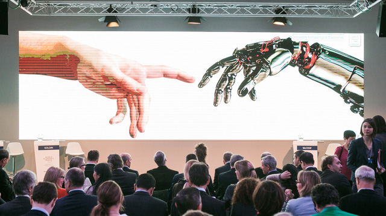
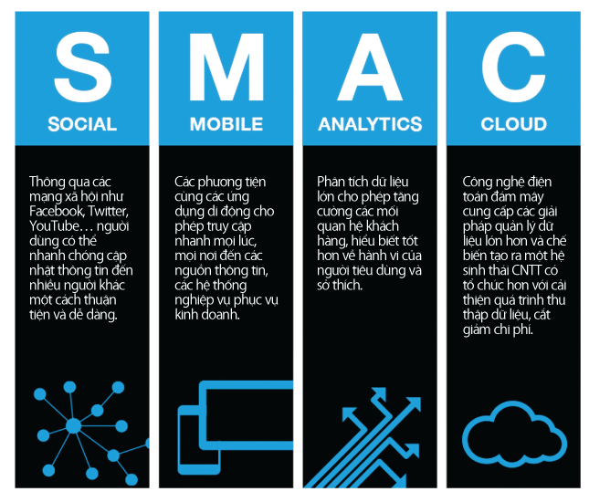
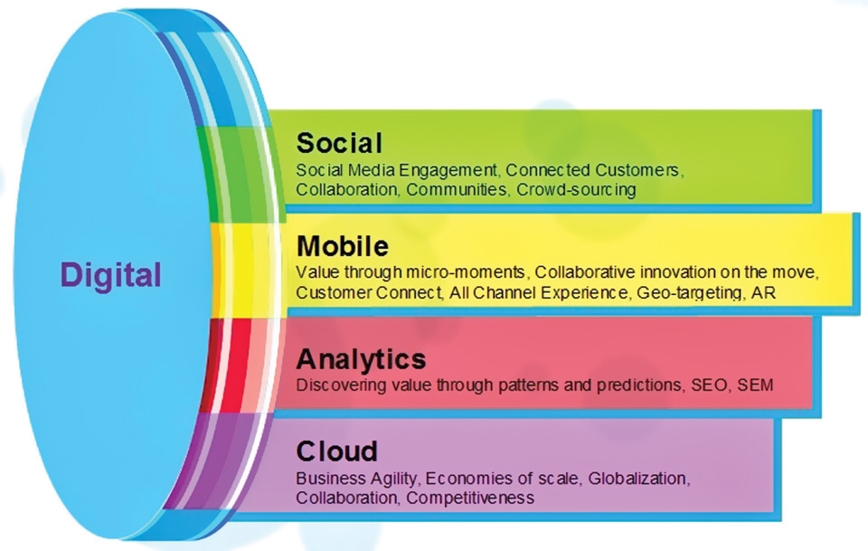
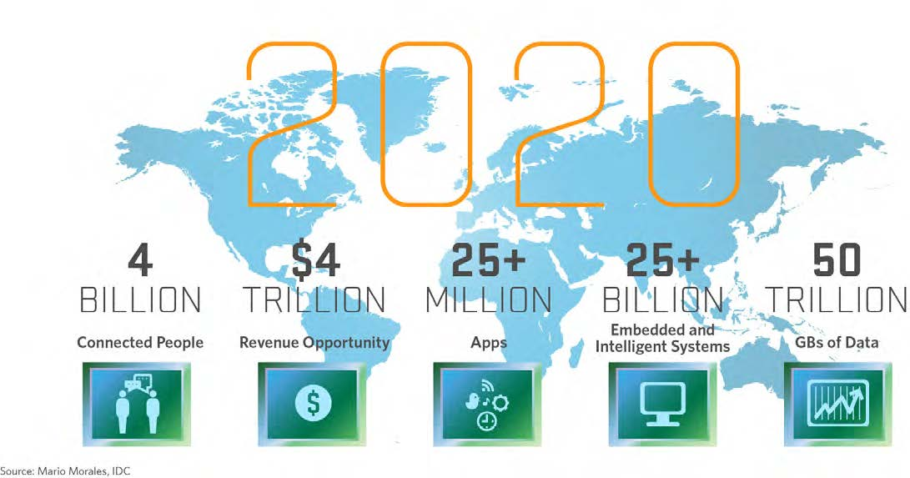
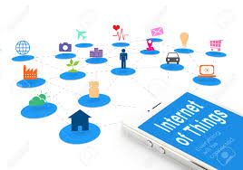

 <div class="container-fluid p-0">

       <section class="resume-section p-3 p-lg-5 d-flex d-column" id="about">
        <div class="my-auto">
              <h1 class="mb-0">
                <span class="text-primary">Nghiên Cứu</span>
              </h1>
            <div class="resume-item d-flex flex-column flex-md-row mb-5">
               <div class="resume-content mr-auto">
                    <h3 class="mb-0">HƯỚNG NGHIÊN CỨU  CÔNG NGHỆ THEO CUỘC CÁCH MẠNG THỨ 4 - THẾ GIỚI THỰC VÀ ẢO</h3>
                    <div class="text-dark text-justify">
                        <p class="text-center"></p>
                        
                        <p><i>4 cuộc cách mạng công nghiệp trong lịch sử: (1) Cơ khí hóa với máy chạy bằng thủy lực và hơi nước. (2) Động cơ điện và dây chuyền sản xuất hàng loạt. (3) Kỷ nguyên máy tính và tự động hóa. (4) Các hệ thống liên kết thế giới thực và ảo năm 2016-2020.</i></p>
                        <p class="text-center"></p>
                        <p><i>Các nguyên thủ quốc gia cùng khách mời tham gia một hội thảo về tác động của cuộc cách mạng công nghiệp thứ tư trong (nguồn: Diễn đàn kinh tế thế giới 2016 tại Davos, Thụy Sỹ).</i></p>
                        <p>Cuộc cách mạng công nghiệp lần thứ tư, hay công nghiệp thế hệ 4.0. Đây là xu hướng kết hợp giữa các hệ thống ảo và thực thể, vạn vật kết nối Internet (IoT) và các hệ thống kết nối Internet (IoS). Với sự kết hợp giữa thế giới thực, thế giới ảo và thế giới sinh vật. Những công nghệ mới này sẽ gây ảnh hưởng to lớn đến mọi luật lệ, mọi nền kinh tế, mọi ngành công nghiệp, đồng thời cũng thách thức ý niệm của chúng ta về vai trò thực sự của con người.</p>
                        <p><b>Tại sao SMAC khác biệt?</b></p>
                        <p> Điều làm nên sự khác biệt của xu hướng SMAC là mọi cấu thành trong nó kết hợp chặt chẽ với nhau và tạo thành một hệ sinh thái. <span class="text-danger"><b>SMAC</b></span> là từ viết tắt của <span class="text-danger"><b>S</b></span>ocial (Xã hội), <span class="text-danger"><b>M</b></span>obile (Di động), <span class="text-danger"><b>A</b></span>nalytics (Phân tích, dựa trên Dữ liệu lớn) và <span class="text-danger"><b>C</b></span>loud (Đám mây).</p>
                        <p class="text-center"></p>

                        <p>Điều làm nên sự khác biệt của xu hướng SMAC là mọi cấu thành trong nó kết hợp chặt chẽ với nhau và tạo thành một hệ sinh thái. Điện thoại di động giờ đây có khả năng chạy nhiều dữ liệu hơn. Các dữ liệu này được dùng để kết nối sâu hơn với đám mây, tham gia các kênh xã hội và mang lại cho người tiêu dùng thêm nhiều trải nghiệm cá nhân.</p>
                         <p class="text-center"></p>
                         <p>Các chuyên đề nghiên cứu sinh viên, học viên nên theo xu thế công nghệ để tại yếu tố xã hội cũng được “cài” vào hạ tầng của di động/các công cụ phân tích/đám mây. Đây là một trong những chất xúc tác chính tạo nên sự thành công của  SMAC để cải tiến hoặc dịch vụ mới ở một sản phẩm mà còn xác định lại hành vi cũng như cách giao tiếp giữa từng cá nhân và giao tiếp với các dịch vụ được số hóa.</p>
                         <ul>
                           <li>Xây dựng chiến lược tổng thể với lộ trình phù hợp để chuyển đổi sang mô hình kinh doanh thông minh ứng dụng SMAC.</li>
                           <li>Tiếp cận các dịch vụ phát triển kinh tế số ( Digital Economy)</li>
                           <li>Xây dựng các ứng dụng ngữ cảnh thông minh, trợ giúp thông minh</li>
                           <li>Xây dựng mô hình doanh nghiệp ERP - theo hướng quản trị thông minh thích ứng hội nhập TPP, WTO</li>
                           <li>Chuyển đổi Website hiện tại sang xu hướng SMAC, sử dụng công nghệ mới, Bootstrap.</li>
                           <li>Xây dựng Hệ thống quản trị doanh nghiệp tổng thể trên Mobile.</li>
                            <li>Xây dựng các ứng dụng thông minh trên nền tảng Web, Smart phone cho cộng đồng: giáo dục thông minh, nông nghiệp thông minh, sức khỏe và tư vấn tự động</li>
                           <li>Tích hợp các công cụ phân tích Real-time.</li>
                            <li>Giúp doanh nghiệp ra quyết định nhanh hơn nhờ hạ tầng công nghệ mạnh, nền tảng Cloud Computing.</li>
                         </ul>

                         <p><b> Với tiếp cận nghiên cứu, chúng ta cùng giải quyết các bài toán thách thức trên toàn cầu</b></p>
                          <p class="text-center"></p>
                          <p><b>Dưới đây là danh sách 10 xu hướng công nghệ của Gartner cho năm 2015-2020 (Source: Gartner Symposium/ITxpo 2016)</b></p>
                          <ol>
                            <li><p>Tính toán ở mọi nơi. Theo Gartner, điều này chỉ có nghĩa là sẽ phổ biến hơn nữa khả năng truy cập khắp mọi nơi vào các hệ thống mạng. Màn hình thông minh và các thiết bị kết nối sẽ rất phát triển, với nhiều hình thức, kích cỡ và cách thức tương tác.<br>
                            Gartner cảnh báo rằng bộ phận IT truyền thống sẽ không còn thích hợp để đối mặt với những thách thức “mọi lúc, mọi nơi”, và các nhân sự IT phải cần đạt được những kiến thức chuyên môn hơn.</p></li>
                            <li><p>Internet of Things (IoT). Lời khuyên của Gartner cho các nhà quản lý CNTT là hãy thử nghiệm, lấy ý tưởng và trao quyền cho cá nhân trong các tổ chức CNTT để phát triển ứng dụng cho các thiết bị kết nối và cảm biến.<br>
                            Gartner tin rằng IoT có tiềm năng to lớn, mang lại nhiều giá trị cho doanh nghiệp, và thậm chí cho biết những cảm biến nhỏ có thể phát hiện các vấn đề trong thiết bị trước khi hỏng hóc xảy ra, tiết kiệm cho doanh nghiệp.</p></li>
                            <li><p> In ấn 3D. Công nghệ này đã được khoảng từ năm 1984, nhưng bây giờ đã trưởng thành và đang gia tăng. Trong khi in ấn 3D được người tiêu dùng rất quan tâm, nó thực sự có giá trị nhiều hơn cho doanh nghiệp.</p></li>
                            <li><p>Phân tích dữ liệu sẽ được chú trọng và tăng cường hơn (Advanced, Pervasive and Invisible Analytics). Mọi ứng dụng đều có khả năng phân tích.</li>
                            <li><p>Hệ ngữ cảnh phong phú (Context Rich Systems). Thông tin về người sử dụng, vị trí của họ, những gì họ đã làm trong quá khứ, sở thích, quan hệ xã hội và nhiều thuộc tính khác đều trở thành đầu vào cho các ứng dụng.</p></li>
                            <li><p>Máy móc thông minh. Gartner đưa ví dụ về công ty khai khoáng toàn cầu Rio Tinto, đang sử dụng loạt xe tải tự vận hành, cho thấy vai trò của máy móc thông minh.</p></li>
                            <li><p>Cloud Computing và Client. Điều này nhấn mạnh vai trò trung tâm của đám mây. Một ứng dụng sẽ nằm trên đám mây, phục vụ mọi đối tượng khách hàng.</p></li>
                            <li><p>Software Defined Applications and Infrastructure - Ứng dụng và hạ tầng được xác định bằng phần mềm. CNTT sẽ không thể làm việc với chương trình, thành phần đã được được xác định trước, nó cần có một hạ tầng động, linh hoạt hơn.</p></li>
                            <li><p>Web-Scale IT - Web quy mô CNTT. Điều này giống như áp dụng một số mô hình được sử dụng bởi các nhà cung cấp đám mây lớn, bao gồm cả chấp nhận rủi ro và dàn xếp, hợp tác.</p></li>
                            <li><p>Bảo mật. Đặc biệt, Gartner nhấn mạnh nhiều hơn đến ứng dụng tự bảo vệ.</p></li>
                          </ol>
                          <p class="text-center"></p>
                          <p><b>Xem chi tiết các chuyên đề nghiên cứu cập nhật mới tại:</b> <a onclick="clickResearch3()" href="#">http://is.hust.edu.vn/~haipv/research4</a></p>
                           <p><b>Xem thông tin chi tiết các chủ đề nghiên cứu bao gồm Project 1, 2, Project HTTT, đồ án tốt nghiệp kỹ sư, thạc sĩ  tham khảo tại Web links:</b><a onclick="clickResearch3()" href="#">http://is.hust.edu.vn/~haipv/research</a></p>
                    </div>
                </div>
            </div>

            <div class="resume-item d-flex flex-column flex-md-row mb-5">
              <div class="resume-content mr-auto">
                <h3 class="mb-0">CÁCH TIẾP CẬN NGHIÊN CỨU</h3>
                <div class="text-dark text-justify">
                  <p>
                    Hướng tiếp cận công nghệ:  Sinh viên, học viên sau đại học sau nghiên cứu sẽ thích nghi với công nghệ mới nhất hiện nay. Các em sẵn sàng tham gia các tập đoàn doanh nghiệp lớn SAMSUNG, APPLE, VIETTEL, FPT,BKAV, .và các doanh nghiệp Nhật Bản vvvv</p>
                    <p>
                    Hướng tiếp cận khoa học: Sinh viên, học viên sau đại học sau nghiên cứu có thể viết bài báo khoa học với các thầy/ cô và nhà khoa học trong nước quốc tế. Theo định hướng này, sinh viên- học viên xin các nguồn học bổng quốc tế đi học thạc sĩ hoặc tiến sĩ ở nước ngoài. </p>
                  <!-- </span> -->
                  <!-- <span> -->
                    <p> Hướng tiếp cận khởi nghiệp: Sinh viên, học viên sau đại học lập nghiệp khởi nghiệp ngay từ khi còn trên ghế nhà trường; Định hướng nghiên cứu kết nối với các doanh nghiệp, nhà đầu tư thiên thần ..vvv</p>
                    <p>Hướng tiếp cận kỹ năng-năng lực bản thân:  Sinh viên, học viên sau đại học theo phương pháp nghiên cứu kết hợp chính sách - nghiên cứu - kỹ năng mềm của bản thân để khi ra trường thích nghi với các tổ chức, cơ quan trong nhà nước.</p>
                   <p class="text-primary"><i>Chúng ta hãy cùng nghiên cứu và tiếp cận nền tảng công nghệ mới nhất hiện nay giúp các bạn luôn làm chủ công nghệ để đáp ứng nhu cầu "việc cần người công nghệ" hiện nay</i></p>
                </div>
              </div>
            </div>

            <div class="float-rigth">
                <pre>
                  Address in Vietnam
                  Information systems Dept. School of Information Technology and Communication
                  B1 Building
                  No 1. Dai Co Viet, Hanoi, Vietnam
                  Address in JAPAN
                  Soft Intelligence Laboratory, Graduate of Science and Engineering
                  Dept. of Human and Computer Intelligence
                  Ritsumeikan University, JAPAN, 1-1-1 Noji-higashi, Kusatsu, Shiga, 525-8577 Japan
                </pre>
            </div>
         
      </div>
      </section>

    </div>